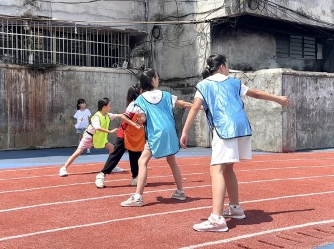
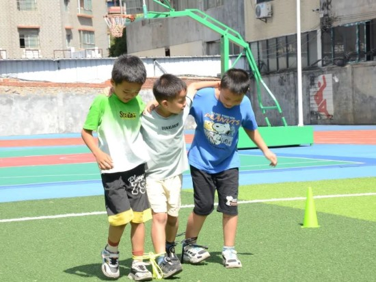

中南大学计算机学院“活水”计划支教
1、智慧启航，活水润泽”——计算机学院“活水”计划支教团出征动员大会圆满举行
7月13日，计算机学院“活水”计划支教团出征动员大会在信息楼535成功举办。 两小时的深入交流极大地提升了同学们对于支教活动的认识和热情。计算机学院党委副书记、指导老师以及带队学长学姐的分享， 不仅帮助同学们更加深入地理解了支教的意义， 还为大家提供了宝贵的支教经验，这使同学们对即将到来的支教之旅充满了信心和期待。
2、智慧启航，活水润泽
骄阳似火，万木葱茏，中南大学计算机学院活水计划支教团怀抱炙热的梦想，前往湖南省永州市瑶族自治县沱江镇第四小学开展支教活动。 微光点点，也许小如萤烛；涓涓细流，也许微如尘雾。但我们相信：有些光芒一旦亮起便不会熄灭，有些涓滴一旦淌流便不会干涸。青春芳华， 鲜衣怒马，我们希望成为月色星光，照亮一方小小的苗圃；我们希望成为【润风泽雨】，带来碧空洗净后的彩虹；我们希望成为【星星之火】， 点燃孩子们心中的求学热情。活水支教团的老师们怀着这样的希望，群策群力，同心协契，在沱江四小蔓蔓日茂的青碧苗圃上，栽种下一棵生长着 “妙想语文、实用数学、拓界英语、巧手艺术、趣味科学、灵光编程、悦动体育”等新绿枝丫的年幼树苗。
3、运动动动动动动会！
 
🏃运动小将，英姿勃发 🚀步伐轻快，朝气蓬勃 趣味赛场，笑声连连，竞技与欢乐交织， 每一次跳跃，每一次奔跑，都是活力的诗篇， 今日的荣耀，在这里，激情与友谊，共同上演。
🌈跳远沙坑，身轻如燕 🌟飞跃的身影，划破长空 小小运动员们的每一次腾空而起 都是对自我极限的挑战与超越
🏃跑道上，风驰电掣 🔥速度与激情的碰撞 每一次奔跑，每一次冲刺 都映照着孩子们对胜利的渴望
📣接力赛，团队精神的展现 🔗一棒接一棒，传递的是信任与力量 默契的配合，共同的目标 为荣誉而战，为团队而拼
🤼丢沙包，技巧与精准的结合 🎯每一次投掷，都是对目标的精准打击 孩子专心致志的眼神，手中紧握的力量 闪烁着独一无二的灵动与智慧
🪑抢凳子，笑声与欢呼声交织 💦机智与速度的巅峰较量 在紧张刺激的氛围中 孩子们如同敏捷的小鹿 捕捉胜利的精彩瞬间
🏆赛场上，竞争激烈，气氛热烈 ☀刺目的阳光照耀，灼烧着孩子们的肌肤 却从未减退他们的热情
🥇每一次努力，每一次拼搏 沱江镇第四小学的运动小将们 展现出了不屈不挠的精神 为梦想而战，为荣誉而拼
让我们为这些小小运动员们 送上最热烈的掌声和最真挚的敬意 持之以恒，勇往直前！ “鲲鹏初展翅，来日尚可期” 👏👏👏